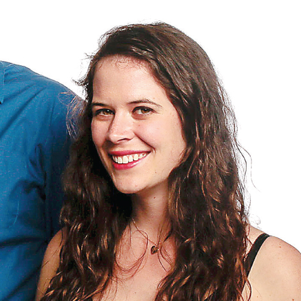

About Us
Fangirl the Magazine entertains independent young women and empowers them to come out of the shadows of their screens. From video games to fan fiction, Fangirl is the strongest voice for women in these traditionally male-dominated industries.
According to data from the Entertainment Software Association, women made up almost 50 percent of the gaming community in 2014. That number continues to grow, but their attempts to critique the industry are met with threats of violence or worse. This negative sentiment floods into similar areas of interest, such as fan fiction and comic books. Fangirl prides itself on being the strongest voice for women in these traditionally male-dominated industries. It provides a forum for women to break down barriers and build a community that supports their passions. Fangirl serves its readers by offering content that creates conversation, advocates their causes and empowers them to do what they love.
Staff

This is Caitlyn's bio. This is Caitlyn's bio. This is Caitlyn's bio. This is Caitlyn's bio. This is Caitlyn's bio. This is Caitlyn's bio. This is Caitlyn's bio. This is Caitlyn's bio. This is Caitlyn's bio. This is Caitlyn's bio.
Name: Allison Lewis Title/Role at Fangirl: Publisher About Me in 3rd person (100-150 words): Allison Lewis is a co-founder of Fangirl the Magazine. She earned both a Bachelor of Journalism (May 2014) and a Master of Arts in Journalism (December 2015) from the Missouri School of Journalism. At Fangirl, Allison helps shape editorial content through story brainstorming, content editing and writing. In her spare time, Allison enjoys running, reading, traveling, cooking and learning about wine. Favorite fandom: Grey’s Anatomy and Harry Potter Fun fact about me: I’ve watched every season of Grey’s Anatomy three times through. Twitter (optional): @AllisonLewis24 Instagram(optional): @lewisallisone

This is Mollie's bio. This is Mollie's bio. This is Mollie's bio. This is Mollie's bio. This is Mollie's bio. This is Mollie's bio. This is Mollie's bio. This is Mollie's bio. This is Mollie's bio. This is Mollie's bio.
This is Sean's bio. This is Sean's bio. This is Sean's bio. This is Sean's bio. This is Sean's bio. This is Sean's bio. This is Sean's bio. This is Sean's bio. This is Sean's bio. This is Sean's bio. This is Sean's bio. This is Sean's bio.